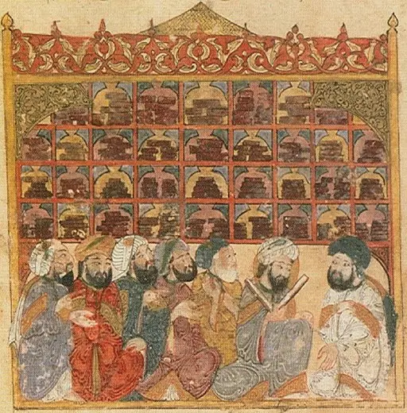
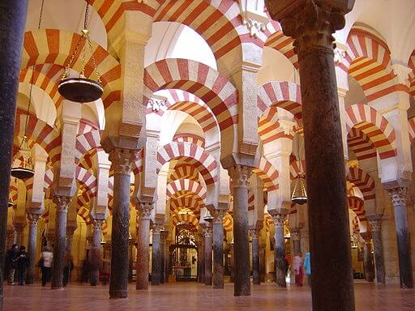
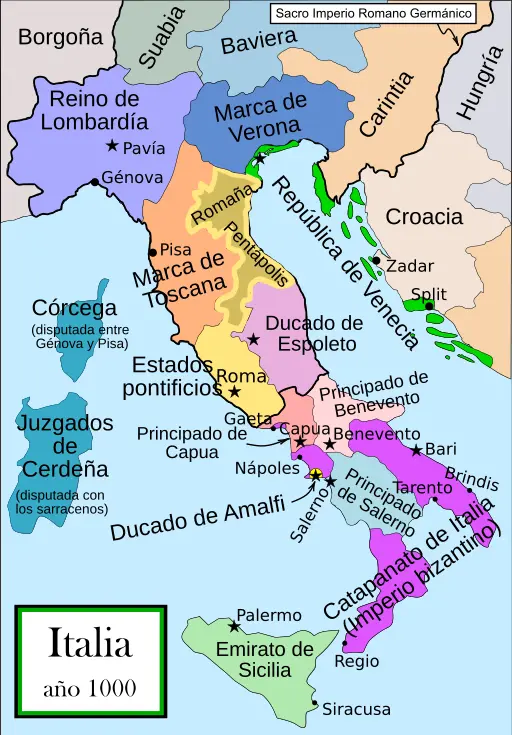
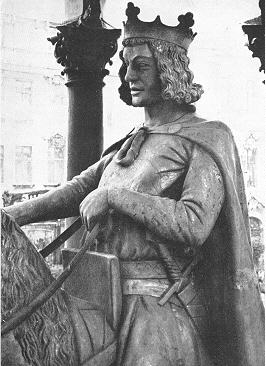
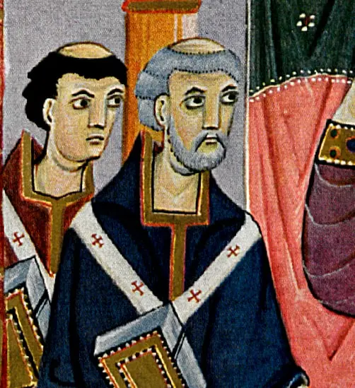
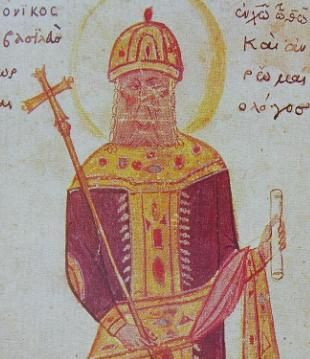

This site uses cookies from Google Analytics and Microsoft Clarity
to analyse its use:
The introduction of the game coincided with the High Middle Ages,
just before the Late Middle Ages, which began with the crisis of the 14th century.
It was then that the last and most prominent medieval periods of the renaissance
took place, with the most notable influences on chess being the Ottonian renaissance
(continuation of the Carolingian), and the Gothic pre-renaissance of the 12th century,
with the revitalisation of trade, the emergence of the bourgeoisie and the consolidation
of the Christian kingdoms. The period was interrupted in the 14th century by the Black Death
epidemic.
The spread of the Shatranj in Western Europe is
archaeologically
present in several places.
In the 10th century the luxury pieces were mainly of glass, of Muslim manufacture,
and the simpler ones of bone. Beginning in the 11th century, the
pieces again took on a figurative form, as they had done in Persia before the
Muslim domination. In the 12th century figurative pieces began to become common, but
they still shared space with abstract symbolic ivory pieces, that now incorporated
engravings, sometimes decorative, but the tendency was to represent the meaning of
the piece. Thus, in the 13th century the symbolic pieces characteristic of the Islamic
Shatranj, still present in Europe until the end of the 14th century,
practically disappeared.
In the Late Middle Ages, and after overcoming the crisis caused by the Black Death
in the 14th century, the reform of the game in the 15th century coincided with the
emergence of the rich merchants and the bourgeoisie, patronage and the
prelude to the Renaissance. The nobility lost importance in favour of the king and
the courtiers, so that soon the knowledge of the game was part of the knowledge required
of a courtier, emulating the indications of the ancient Muslim sages.
Medieval period of warming (950 - 1250)
The Medieval period of warming, also known as the
Medieval climate anomaly, was associated with an unusual temperature
rise roughly
between 950 and 1250 CE. For about 300 years, these new climate
conditions changed
ecosystems and radically altered human societies.
As northern Europe became warmer, the cultivation boundaries were higher and
further north,
so agriculture spread and generated food surpluses. At the time,
England was warm
enough to support vineyards, centralised governments in Europe were becoming
stronger,
people no longer needed fortifications to protect their once limited arable
lands, and many
people left seeking new lands.
With sea ice and land ice in the Arctic shrinking with the rising
temperatures, new lands
became accessible and Vikings travelled farther north than before.
The expansion of the Norse culture across Iceland into southern
Greenland, and their
ultimate establishment of isolated settlements in Newfoundland, occurred
during this time.
The early 13th Century marked the beginning of the conquests of Genghis
Khan and
his Mongol hordes. An abundance of moisture would seem to provide the
horsepower for the
rapidly growing Mongol Empire. The Mongol soldier typically had five steeds
at their disposal.
With a large army, that quickly translates into huge herds and a huge need
for grass.
The monasteries and manuscripts
Ripoll Monastery Cloister.
Foto: José Luis Mieza, CC BY 2.0, via Wikimedia Commons
The importance of the monasteries in producing copies and translations of
existing classical works
is well known. The invasions of the Western Empire by the Nordic peoples that
began in the early
5th century destroyed the imperial libraries spread over much of Italy. Many of
their volumes,
containing the great Latin classical tradition, were preserved in private
libraries. Important
repositories of classical books together with Latin ecclesiastical texts were
established in
Christian communities.
Throughout the Middle Ages, from the foundation of
Montecasino (529) until the 15th century, the
libraries
of Western Europe were exclusively ecclesiastical, belonging to monasteries or
cathedrals, and, from
the 13th century onwards, to universities. The Benedictine rule, with its
prescriptions obliging
reading and writing, laid the foundations of the scriptorium and the
library that existed in
all the monasteries that the order spread throughout Europe.
It is in the monasteries that we find the first reference to chess in the
West,
Versus de scachis, in the Benedictine abbey of Einsiedeln
(Switzerland),
with strong links to the Ottonian dynasty of the Holy Roman Empire, who
had a relationship
with Gerbert of Aurillac, Pope Sylvester II, who studied at
the
Monastery of Santa Maria de Ripoll.
With almost no communications in the Late Middle Ages and very little in the High
Middle Ages,
communications between monasteries were very important, and translations from
the monastery of Ripoll
were used, for example, in the abbey of Reichenau, on Lake Constance. We must
think that practically
until the beginning of the 12th century, and the revitalisation of trade in the
13th century, the usual
mode of travel was between monasteries, rather than between towns.
The situation in the East dragged on for a few centuries, and from
Constantine to Justinian
several libraries were organised, in Asia Minor, Alexandria, Palestine, Athens,
the monasteries of Mount
Athos, and above all, the Imperial library in Constantinople. These
libraries suffered multiple
fires and invasions, usually destructive. The imperial library was the most
important, with some 100_000
copies. But after two major fires in the 5th and 8th centuries, it was plundered
by the Croatian Franks
and Venetians during the Fourth Crusade in the early 13th century. The Imperial
Library, a centre for
the preservation of mainly Greek writings, disappeared definitively with the
invasion of Constantinople
in the 15th century, although it is still the most important source of Greek
classics that have survived
to the present day.
Even considering the importance of Constantinople, with an important task of
conservation and copying of
manuscripts for their preservation, it was not an important centre for the
generation of new documents,
nor for the dissemination of existing ones, as it did not have a school or
university, and there is no
record of it being a public library; the Neoplatonic school in Athens was closed
and its scholars
persecuted by Justinian. The contents generated by the Eastern Roman Empire
since Justinian were very
meagre. For example, chess is considered to have been played in
Constantinople, and some testimonies
attest to this, but references are practically non-existent. By the 10th
century, Damascus, Baghdad or
Córdoba were of greater cultural importance, as they had accumulated most of the
originals, which were
copied in Arabic, and were the centres of cultural production and dissemination.
The Sassanid empire (226-651) had three centres of education, at
Ctesiphon, Resaena, but mainly
the academy of Gundeshapur, which became the intellectual centre of the
empire in the time of
Khosrow I, offering refuge to the Hellenistic intellectuals of the
Neoplatonic school of Athens,
persecuted by Justinian I in 529. This school also made many translations
into Pahlavi,
Sassanid Persian.
In 825, with Persia under Muslim rule, the House of Wisdom or
Great Library of Baghdad was established, emulating the academy
of Gundeshapur;
in fact, the academic centre of Baghdad drew on the scholars of Gundeshapur,
beginning the rapid decline
of the Persian academy. The Great Library of Baghdad is considered the
first university in history, and acted as a centre for the dissemination
of Islamic thought
during the Golden Age of Islam. Its scholars also acted as civil
servants, serving as physicians,
architects and political advisors, among others. It was destroyed by the Mongols
during the siege of
Baghdad (1258).
Many well-known scholars wrote books on the Shatranj in this golden age:
Al-Suli, with the complete name Abū Bakr Muḥammad ibn Yaḥyā ibn
al-'Abbās al-Ṣūlī
(أبو بكر محمد بن يحيى بن العباس الصولي) wrote:
Kitāb al-Shiṭranj al-Nisḥa al-Awala (كتاب الشطرنج النسحة الاولة)
First version of chess book.
Kitāb al-Shiṭranj al-Nisḥa ath-Thānīa (كتاب الشطرنج النسحة الثانية)
Chess book second edition.
Al-Lajlaj, alumne d'Al-Suli, with the complete name
Abu al-Faraj Muhammad ibn Ubaid Allah al-Lajlaj (ابو الفرج محمد بن
عبيد الله
اللَجْلاج)
wrote Manṣūbāt al-Shiṭranj (منصوبات الشطرنج) Chess positions.
Al-Rāzī (الرازى): Kitāb latīf fī al- Shiṭranj (كتاب لطيف في
الشطرنج)
A good chess book.

Miniature of the Al-Hariri Maqamat (collection of tales)
Credit: Zereshk, Public domain, via Wikimedia Commons
From the 9th century onwards, an important
network of libraries spread throughout the Islamic world:
Baghdad, Cairo, Alexandria, Cordoba, Toledo and Granada. The library in
Cordoba had as many as
400_000 copies in the 10th century, while the Cluniac library in the 11th
century had only a few hundred
volumes; hence the great importance of the Toledo School of Translators
in the 12th and 13th
centuries, who translated many Arabic manuscripts.
Many Jews also acted as translators, and thus would be a transmitter of the
cultural and scientific legacy
of the Arab world to both Jews and Christians. In the West, the work of
Alfonso X of Castile, mainly
a compendium of knowledge of Muslim origin, is well known, as the Islamic
contents concerning the
Shatranj and other games were quite extensive, mainly from writers of
Persian origin.
As early as the 13th century, Paris was the first city to have a large
commercial exchange of
manuscripts, with manuscript producers commissioned to make specific books for
specific people. Paris had
a large population of wealthy literate people, enough to support the people who
produced the manuscripts.
This medieval period marked the shift in manuscript production from monks in
monasteries to booksellers
and scribes who made a living from their work in the cities. In the 11th
and 12th centuries chess
became popular among monks, nobility and clergy, but in the 13th century there
are references to its use
by crusading soldiers, thus being a further factor in the game's arrival among
the wealthy merchants and
cultivated professionals who began to appear in the cities.
The 13th and 14th centuries brought a profound change to medieval
libraries. Universities and
university libraries appeared, although they did not really come into their own
until the Renaissance.
Private book collections increased greatly. In Italy, the first humanists,
Petrarch (1304-1374),
Boccaccio (1313-1375) and, especially, Poggio Bracciolini
(1380-1459), travelled through the
ancient abbeys and interacted with merchants from the East in search of
classical Greek and Latin texts.
European immigration in Islamic lands

Inside the Mosque of Cordoba.
Crèdit: Timor Espallargas, CC BY-SA 2.5,
via Wikimedia Commons
Many Islamic cities were great centres of knowledge and prosperity, and there was
great religious tolerance,
so that travel to Damascus, Baghdad, and Cordoba was common. These
could be considered
cultural journeys, and the prosperity of these cities encouraged many to take up
residence, with frequent
conversions of immigrant Christians to Islam; a simple phenomenon of cultural
and economic immigration
to the rich, cultured and developed cities of Islam.
In the 10th century, during the time of Caliph Abd-ar-Rahman III (891-961)
and his son
Al-Hakam II (915-976), al-Andalus enjoyed unprecedented economic and
cultural splendour, with its
centre in Córdoba. There was a high degree of tolerance so that philosophers,
scholars, artists and
scientists of various origins entered his courts. Al-Hakam II created
the richest and most
important library in Europe in Córdoba. Translators translated thousands
of Greek and Latin works into
Arabic. The caliphate, which became an important state at the end of the reign
of Abd-ar-Rahman III,
maintained diplomatic relations with the Byzantine Empire and the Holy Roman
Empire. The caliph maintained
a permanent delegation in Baghdad to copy or acquire any volume that could be
published, and also maintained
relations with delegations in Constantinople, Alexandria and Damascus, cities
also very rich in culture,
which enabled him to continue to enrich the library in Córdoba.
During the 11th and 12th centuries, many Christian scholars travelled to Muslim
lands to learn science.
Prominent examples are Leonardo Fibonacci of Pisa (1170 - 1250),
important mathematic, and
Adelard of Bath (1080 - 1152) who made Latin translations of many
important Arabic scientific works,
including ancient Greek texts that only existed as translations in Arabic, and
were thus introduced to Europe.
Another case was Constantine the African (1017 - 1087), one of the
introducers of Arabic medicine to
Europe. In the 11th to 14th centuries many European students attended Muslim
centres of higher learning,
similar to Western universities.
Pilgrimage
Another motive for Christian visits to Islamic lands was pilgrimages to the
Holy Land, Palestine.
Constantine I in 330 moved the capital of the empire to Byzantium, and
built Christian places of worship
in Jerusalem, such as the Church of the Holy Sepulchre. In 603, Pope Gregory
I commissioned the
construction of a hospital in Jerusalem, which was part of the Eastern Roman
Empire, to serve and care
for Christian pilgrims in the Holy Land (a hospital was then a type of hostel).
In 614 the Sassanid Empire
conquered Jerusalem, until it was recaptured in 629 by Emperor Heraclius, but
Byzantine Jerusalem was finally
conquered by the Arabs in 638. In 800, Charlemagne enlarged the Jerusalem
hospital, and added a library.
From the 4th century onwards, new pilgrimage routes were established through
the lands of the Eastern Roman
Empire, routes that had not been common until then, as Christians had
been persecuted. These routes for
many centuries represented an important cultural flow through
Constantinople. Later, towards the end
of the 11th century, these routes were used for the Crusades.
Another important pilgrimage would be the Roman routes, to reach Rome.
They had different variants, with
the facility of often still existing Roman roads, including bridges to cross the
most difficult river crossings.
As can be read in the section on Castile and
León, the pilgrimage along
the Way of St. James also began to be an important cultural route
for Europe
from the 11th century onwards. It contributed to communication between
monasteries, and from the 12th
century onwards it was also a route frequented by the nobility.
It was generally in the 11th century that far-reaching commercial activities,
hitherto limited
in Europe to the activities of the Muslims, the maritime activities of the
Eastern Roman Empire and the
Viking raids, which were warlike in the west, but more commercial in the east,
began to resume.
The pilgrimage routes began to be protected by the kings of Christendom,
which encouraged them to be
exploited for trade.
The church
The earliest recorded case of prohibition is the 529 CE ordinance issued
by
Emperor Justinian of the Eastern Roman Empire, when he closed the
Neoplatonic Academy and
schools in Athens. It forbade teaching philosophy, explaining the
laws and playing dice.
This was a few years before the arrival of chess in Persia, but
the ban may have delayed the entry of chess into the Byzantine empire,
where it was called
Zachitrion.
Islam also had its prohibitions. In 655, Caliph Ali Ben Abu-Talib
banned chess because
the pieces had idol figures on them. In 680 Islam interpreted the rule as
forbidding chess,
although the Caliphs themselves played chess and had chess players in their
court.
Around 1061 Peter Damian wrote to Pope
Alexander II
(pope between 1061 and 1073) complaining about the use of chess by clerics as a
game that was
dishonest, absurd, libidinous, and a distraction from the duties of the
clergy.
By the year 1093, shortly after the Great Eastern Schism (1054), the
Eastern Orthodox Church
condemned chess. The Church eradicated chess in Russia as a vestige of paganism.
Around 1115, the emperor Aleix I Comnè was fond of the game. Despite this,
it was still
censored in the Eastern churches until 1125. John Zonares, a monk who had
been captain of
the Byzantine imperial guard, issued a directive banning chess as
depravity.
Although some popes were fond of chess, such as Gregory
VI
(pope from 1045 to 1047), Innocent III (pope from
1198 to 1216) or
Innocent IV (pope from 1243 to 1254), and the
figure of
Sylvester II (pope from 999 to 1003)
could have
been decisive in the spread of chess throughout Europe after his time at
the Ripoll
Monastery in Catalonia, the various prohibitions and
condemnations
followed one after the other from the 11th century, when Peter Damian
wrote to Pope Alexander II complaining about the use of chess by the
clergy.
Another reason for the reluctance to chess in the West may have been its
Muslim origin, when
in 1095, at the end of the 11th century, there was the declaration of holy
war (the Crusades)
by Pope Urban II, in response to the request of the Roman Emperor of the
East,
Alexius I Comnenus, for military aid against the Seljuks. There were
already voices
criticising chess as unsuitable entertainment for soldiers, and in fact
the reason for this
is unclear, but the Knights Templar were banned from playing chess by
St Bernard of Clairvaux in 1128.
The situation dragged on for 500 years, until
the game was fully accepted in the 16th century, with Pope Pius
IV, of the Medici
family, after the Council of Trent, coinciding with the stay in Rome of Ruy
López de Segura,
then considered the best chess player in Castile. However, in 1551, Tsar Ivan
IV,
Ivan the Terrible, proclaimed a ban on chess in Russia, which remained
in force until the
17th century.
Crusades
Map of the First Crusade
1096-1099
Original work: Captain Blood at de.wikipedia;
Translation: Oxag at fr.wikipedia.,
Public domain, via Wikimedia Commons
From the end of the 11th century to the 13th century there was the phenomenon of
the crusades, military campaigns, armed pilgrimages and the
establishment
of new Christian kingdoms, which also had the indirect effect of cultural
exchanges,
but the forced character determined by circumstances brings them closer to the
spoils
of war; chess pieces of rock crystal or ivory were often used as embellishments
for
other pieces, and, despite references, no set of pieces with precious gems has
been found.
Although many nobles travelled to the lands of Palestine, the phenomenon slowed
down the
exchanges that generated trade and peaceful Christian immigration to the lands
of Islam.
Despite this, it was instrumental in the re-establishment of international
trade,
and also facilitated rapprochement with some elements of Islamic culture;
for example, stories are told of soldiers playing chess in their free time,
indicating that
chess was already a popularly known game, and the war contributed to its
diffusion.
It should also be remembered that crusading routes to Palestine generally passed
through
the Eastern Roman Empire and Constantinople.
Relations between the Western Europeans (Latin or Franks in the nomenclature of
the time)
and the Eastern Europeans (Greeks) had been complicated since the
Great Eastern Schism that began in 1054, just before the beginning
of the
crusades. From then on, the Westerners had been hostile to the Easterners, as
was evident
during the First, Second and Third Crusades. These relations deteriorated
further in 1182
(before the Third Crusade), when all the foreigners in Constantinople had been
massacred
and the Venetian merchants had been expelled by the Byzantine emperors of the
Angelos
dynasty.
First Crusade (1096 - 1099)
Taking advantage of the Byzantine Emperor Alexius I Comnenus call for
help,
Pope Urban II exposed the need for Christians in the West to engage
in a
holy war against the Turks, who were exercising violence against the
Christian
kingdoms of the East and mistreating pilgrims going to Jerusalem, and the
conquest of the so-called Holy Land.
In the first crusade, the phenomenon of the
People's Crusade appeared, mobilising some 100,000
humble people,
men, women and children, responding to the papal call. Even with the virtual
annihilation of all
30,000 Crusaders who crossed the Bosporus with the help of ships provided by
Emperor Alexius I Comnenus, many others reached Constantinople or the
dominions of the
Eastern Roman Empire without completing their journey, thus bringing the
French, Germans and
Italians into closer contact with the culture of the Eastern Roman Empire.
In the main church-organized crusade, the Norman forces, who had
recently been in conflict
with the Eastern empire in territories of the Italian peninsula, were
prominent, and the emperor
distrusted them. However, this much more organised crusade managed to
conquer a large part of
Anatolia, Lebanon and Jerusalem, and this first crusade was the only
successful one in terms of
warfare, although only a small part of it was returned to the Eastern Roman
Empire.
Fourth Crusade (1202 - 1204)
Conquest of Constantinople by the Crusaders
in 1204
David Aubert (1449-79),
Public domain, via Wikimedia Commons
Partitio terrarum imperii Romaniae
LatinEmpire, CC BY-SA 3.0,
via la Wikimedia Commons
In 1202 the Republic of Venice had completed preparations for the crusade,
which was to attack directly the heart of the Islamic world at the time,
the city of Cairo, on papal orders. But many embarked in other ports, and
only 12_000 men took part, instead of the 33_500 men budgeted for. Venice
demanded the full payment, 85_000 silver marks, but the Crusaders were only
able to collect 51_000. This left them in a state of abject poverty,
and an economic disaster also for the Venetians, who had stopped their trade
for a whole year to prepare for the expedition. The proposal was to change
the objective, and for the Crusaders to pay their debts by capturing the
Dalmatian port of Zadar.
The city had already been economically dominated by Venice in the 12th
century, but in 1181 it had rebelled and sought the protection of the King
of Hungary and Croatia. But the king of Hungary was also a Catholic and had
offered, at least in theory, to take part in the crusade himself.
The crusaders made a pact with the emperor's brother prince and reached an
agreement to help him overthrow his brother. The new emperor,
Alexios IV Angelos realised that he did not have enough wealth to
pay for the pact, even with the destruction he carried out of priceless
Roman and Eastern Roman icons in order to extract the gold and silver.
The crusaders, dissatisfied, rioted, and much of the city was burned.
Eventually the Greeks assassinated Alexius IV Angelo, and the new
emperor Alexios V Doukas denied the pact with the crusaders and
Venetians, who
sacked Constantinople. According to a pre-arranged
treaty, the empire was distributed between Venice and the crusading leaders,
and the Latin Empire was established (1204), and it lasted until
Constantinople was reconquered by the Eastern Roman Empire in 1261,
which largest rump state is named Empire of Nicaea.
The trade
In the early Middle Ages, before the year 1000, Europe was a land
of political unrest and lack of security, with a subsistence
economy and little movement of goods. Trade was mainly a local
phenomenon with no long-distance routes, leaving these activities
in the hands of the Eastern Roman Empire, which traded by
sea, and above all the Muslim world. Urban markets began
to enliven internal economic life from the 9th and 10th centuries
onwards, and from the 11th century onwards the first fairs
increased internal and external trade. The purchasing power of
the more powerful sectors of the population was greatly increased,
and they were attracted by luxury goods from the East.
Pilgrimages and crusades would play a very important role in this
commercial renaissance, which would manifest itself in the
extension and renewal of routes and the volume, number and quality
of goods, in the appearance of the first armed associations of
merchants, and in the appearance of new fairs and fixed markets.
In addition to the sea routes, there were some
land and river routes in continental Europe, many of which
are thought to date back to Charlemagne, although there is no
written record before the 11th century, when they were of great
importance in the Ottonian renaissance, the growth of the
maritime republics of the Italian peninsula, and the
pre-Renaissance Gothic period of the 12th century.
The Iberian peninsula was undoubtedly the main gateway of
the Shatranj into Europe, as a consequence of the Muslim
presence on the peninsula
from the beginning of the 8th centuryuntil the end
of the 15th century.
Even so, it must be understood that in the 9th, 10th, and much of
the 11th centuries, the contact of the Christian kingdoms of the
peninsula with the rest of Europe was generally too distant to
maintain a fluid cultural exchange.
It was practically with the death of Almanzor and the appearance
of the Taifa Kingdoms that the timid European contacts of
Sancho III of Pamplona began, at the end of the 10th century
and the beginning of the 11th century. Prior to this, the Asturian
and Vascona resistance was so isolated that it even kept itself
culturally separated from the Islamic world, its enemies.
The Way of St. James was an
important bridge for cultural exchanges with Europe, but its
beginnings at the European level can be dated to the 10th century,
with the pilgrimage of some clerics and bishops. The great expansion
and popularisation took place in the 11th century, coinciding with a
more favourable political environment after the
death of Almanzor, and the construction of hospitals
and improvements to the paths and roads began. The construction of
the current cathedral of Santiago began in 1075, the last stone was
laid in 1122 and the cathedral was consecrated in 1128.
At the end of the 11th century the kingdom of Castile incorporated
Toledo, which by the 12th century had become an important
cultural centre, coinciding with the authorities' support for the
Pilgrim's Way to Santiago, protecting pilgrims. In
the 13th century there was already a large infrastructure associated
with the Way, the influx of nobles increased, and the cultural
return to the peninsula was already quite significant. After the first
years of religious coexistence, with the appropriation of Arabic
writings, the Toledo School of Translators created at
the beginning of the 12th century a cultural centre of great
importance for the whole of Europe. This centre reached its climax in
the 13th century, with
Alfonso X,
who made a great compilation of Islamic knowledge of chess, probably
knowledge of Persian origin, incorporating many Castilian contributions.
Thus, the 12th and 13th centuries were the great cultural period in
Castile and León, and it was mainly during the 13th century
that the work produced by the Toledo School of Translators
became important. In fact, although it was closed after the death of
Alfonso X, the importance of its work would be maintained over
the following centuries.
Iberian Peninsula: Catalonia and Aragon
Anachronistic map of the possessions of
the Crown of Aragon.
Milenioscuro (Original) Indpcatll
(Translation), CC BY-SA 4.0 via Wikimedia Commons
At the beginning of the 9th century, during the time of the Arab invasions,
Charlemagne's empire created the counties of Catalonia and Aragon as
border counties to prevent Muslim invasions; they were what was called the
Marca Hispanica, although they were a group of counties that never
had a common political entity. In reality, the kingdom of Pamplona was never
dominated, neither by the Visigoths nor by the Muslims. The county of Aragon
became a kingdom after the union with the kingdom of Pamplona, thus freeing
itself from Frankish vassalage, and at the beginning of the 11th century it
freed itself from the vassalage of Pamplona. Catalonia freed itself from
vassalage by starting the hereditary system with Wilfred I, and his
son, Wilfred II, at the beginning of the 10th century, no longer
rendered vassalage to the Franks.
We find the first references to rock crystal chessmen in Catalonia, mentioned
in the testaments of Ermengol I, Count of Urgell written on
the occasion of the military expedition of the Catalans against Cordoba in
1010, which resulted in the sacking of the city. In 1056, in the will of
Ermesinde of Carcassonne, other rock-crystal chessmen are also
mentioned.
There is also the case of the existence of the rock-crystal set in
Àger, and
documentary evidence in other places,
such as the abbey of Ripoll, or the now lost ones in the
cathedral of Roda d'Isábena, or those mentioned in the
inventory of the monastery of San Andrés de Fanlo, in Sobrarbe, province
of Huesca, Aragón.
Italian peninsula and Sicily

Italy in the year 1000
Public domain, via Wikimedia Commons
First painting of chess in the West,
in the Palatine Chapel in Palermo, Sicily. (1143).
Public domain, via Wikimedia Commons
Eastern Roman Empire
Byzantine Empire
Original: Varis - Derivative work: Roke~commonswiki,
CC BY-SA 3.0, via Wikimedia Commons

Equestrian sculpture of Otto the Great in Magdeburg.
Furmeyer, CC BY-SA 3.0,
via Wikimedia Commons
Holy Roman-Germanic Empire
Crèdit: A.cano.2, CC BY-SA 4.0,
via Wikimedia Commons
There are several legends relating to the court of Charlemagne and chess:
Legend of the creation of
Tegernsee Abbey
At the court of King Pepin (father of Charlemagne),
an unfortunate situation arose when a son of the king killed a
son of Otger in a dispute over a game of chess.
The Bavarian brothers and nobles Adalbert and
Otger
withdrew from the court, returned to their own domains,
abandoned
secular life and founded the abbey of Tegernsee.
The pieces of Pepin the Short
The most historical reference appears to be in a medieval Latin
writing,
dated to the 13th century, which recounts the donation by
King Pepin the Short, in 764 AD, of some pieces of glass
inlaid with gold and precious stones to the
abbey of Mozac.
The pieces were destined for the transfer of the remains of
Saint Austremonius from Clermont-Ferrand to make a reliquary
in which the saint's remains were to be kept.
Indeed, Pepin the Short in the year 764, or perhaps
Pepin I of Aquitaine in the year 848, had the relics
transferred to the abbey of Mozac.
Charlemagne's chess
legend
There are several legends linking Charlemagne with various existing
chess sets, including a legend concerning a reliquary that has little to do
with chess, and which seems to date from the 14th century; the legend of this reliquary, in
spanish, can be found in the link above.
We incorporate here one of the many legends linking Charlemagne to
chess; in fact, there are several chess sets called
Charlemagne's chess, and we have chosen a modified version
of the legend of the so-called reliquary:
At a feast on 4 April 782, in Aachen, to commemorate
Charlemagne's fortieth birthday, he intended to take on the
best chess player in the kingdom, a soldier by the name of
Garin the Frank. They used a chess set, a gift from
Ibn-al-Arabi, the Muslim governor of Barcelona, as a token
of gratitude for the help Charlemagne had given him four
years earlier against the Vascons, when he had to retreat
through the Navarrese pass of Roncesvalles.
The court marvelled at the chess set, which was made by Arab
craftsmen.
The pieces showed signs of their Indian and Persian origin. The
chessboard,
forged in silver and gold, measured one metre on each side. The
pieces were
made of filigree precious metals, inlaid with uncut diamonds,
rubies,
sapphires and emeralds. Because of the brilliance it seemed to
glow with an
inner light that mesmerised the beholder.
According to legend, Charlemagne, influenced by strange effluvia
coming from
the board, proposed a wager consisting of the following:
If the soldier Garin wins a game, I grant him the territories
of my kingdom,
which stretches from Aachen to the Basque Pyrenees, and the
hand of my
eldest daughter in marriage. If he loses, he will be
beheaded in this very
courtyard at dawn.
When they had been playing for more than an hour and with
convulsions and
excitement, Charlemagne sat up with great effort and threw the
board to the
floor as if freeing himself from a curse, the pieces fell to the
ground and
the game was interrupted.
According to those present, the game was abandoned, as they
considered that the
chess was possessed by an evil force. However, on a less tense
note, a new game
was started and Garin triumphed and received as a reward the
property of Montglane,
in the Lower Pyrenees.
Chess game for the hand of
Matilda of Germany, Countess Palatine of Lotharingia
Ezzo, Count Palatine of Lotaringia, won his wife,
Matilda of Germany, Countess Palatine of Lotharingia, in
a game of chess.
He played against her brother, Otto III, for her hand in
marriage, and won.
Otó II rebent homenatges de les províncies, simbolitzades per dones
germanes, franceses, italianes i alamanes.
Public domain, via Wikimedia Commons

Silvestre II en l'Evangeliari d'Otó III
Meister der Reichenauer Schule, Public domain,
via Wikimedia Commons
The 14th century crisis
Little Ice Age (1300 - 1250)
Black Death (1347 - 1354)
Subsequent refeudalisation
Avignon and Western Schism
(1378 - 1418)
Division of Europe during the Western Schism. Some kingdoms
gave their obedience to the Pope of Avignon (in orange),
others to the Pope of Rome (in blue) and others, according
to convenience, changed sides one or more times.
@lankazame, Mipmapped, rowanwindwhistler, CC BY-SA 3.0,
via Wikimedia Commons
Fall of Constantinople (1453)
Golden Horn Chain
Photo: David Berkowitz from New York,
NY, USA, CC BY 2.0, via Wikimedia Commons
Regne de Sicília
MapMaster, Rowanwindwhistler, Indpcatll (this version),
CC BY-SA 4.0, via la Wikimedia Commons

Andronikos II Palaiologos, Byzantine emperor (1282-1328)
Byzantine art, Public domain,
via Wikimedia Commons
Mehmed ll, Entering the City of Constantinople
Fausto Zonaro, Public domain,
via Wikimedia Commons